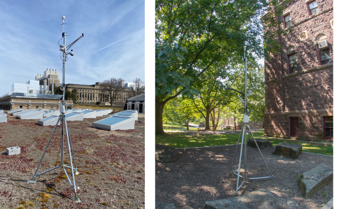

Seasons grow with distance from the equator
The 23.45° tilt of the Earth’s axis creates the seasons. At 65° N, Fairbanks receives about 1 kWh/m² of horizontal solar energy in December and 176 in June. Miami, at 26° N, barely has a winter.
CHAPTER 01 / CLIMATE & THE BUILT ENVIRONMENT
A climate is a set of opportunities and constraints. A site tells you where they become architecture.
Read the ground, sun, wind, and water. Learn which weather patterns matter, then turn the evidence into a design move you can test.
Start with the climateFROM PLANET TO REGION
Climate is the long-term pattern of weather: its averages, its cycles, and its extremes. Before you read a weather file, know which forces shaped it.
Weather is the sequence of conditions at a particular time. Climate describes their long-term distribution, typically over about 30 years: typical patterns, variability, and extremes. Microclimate is the local modification of those conditions by terrain, water, vegetation, materials, and buildings.
The word comes from the Greek klima, slope or inclination: latitude and sun angle set the first pattern (Chapter 02). The atmosphere is largely transparent to sunlight, so the ground heats first and warms the air above it. The equator receives more energy than the poles. The resulting convection, deflected by the Earth’s rotation, organizes the global winds.
The 23.45° tilt of the Earth’s axis creates the seasons. At 65° N, Fairbanks receives about 1 kWh/m² of horizontal solar energy in December and 176 in June. Miami, at 26° N, barely has a winter.
Water heats and cools slowly. Key West, Florida, has an annual temperature range of about 13°C; inland San Antonio, Texas, at almost the same latitude, about 31°C. Coasts get sea breezes by day and land breezes at night.
Rising air cools about 2°C per 300 m. Moist air forced over a range loses its water on the windward side and descends warm and dry on the other: a rain shadow. Slopes drive upslope winds by day and cold drainage at night.
Water vapor, and clouds even more, block incoming sunlight and outgoing long-wave radiation. Dry climates have hot days and cool nights, often a daily range above 17°C. Humid climates stay within about 11°C.
Wladimir Köppen’s 1884 map, refined with Rudolf Geiger, sorts climates into about 25 types by temperature and precipitation. Read the letters as an address: Dfb (snow climate, fully humid, warm summer) for Ithaca, BWh (hot desert) for Phoenix, Am (equatorial monsoon) for Miami. Rubel and Kottek mapped how these zones shift between 1901 and 2100. A Köppen code locates a climate; it does not specify a building.
For building design, Szokolay, after Atkinson (1953), uses four types based on the human thermal problem. Cold: underheating most of the year. Temperate: a seasonal swing between underheating and overheating, neither severe. Hot-dry: overheating, but dry air lets sweat evaporate; a large daily swing. Warm-humid: less extreme heat, aggravated by humidity; a small daily swing. Maritime, upland, and composite climates mix these features. The four families on the design sheet in section 03 follow this logic.
| Weather file | Design problem | Annual mean °C | Coldest / warmest month °C | Mean daily range °C | Warmest-month dew point °C | HDD18 °C·d | CDD18 °C·d | GHI kWh/m²·a | Load |
|---|---|---|---|---|---|---|---|---|---|
| Fairbanks, AKDfc · Polar / very cold | Long, deep underheating | −1.5 | −21.4 / 18.1 | 9.8 | 8.8 | 7,166 | 55 | 955 | |
| Ithaca, NYDfb · Temperate / seasonal | Seasonal: long winter, warm summer | 9.2 | −3.6 / 21.9 | 10.1 | 14.6 | 3,484 | 278 | 1,391 | |
| San Francisco, CACsb · Temperate / marine | Mild all year; cool, windy summers | 14.6 | 11.3 / 17.9 | 7.8 | 12.8 | 1,303 | 51 | 1,851 | |
| Denver, COBSk · Cold, dry, high altitude | Cold winters, strong sun, large daily swing | 11.1 | −2.2 / 24.1 | 14.7 | 9.8 | 3,062 | 548 | 1,876 | |
| Phoenix, AZBWh · Hot-arid | Severe overheating, dry air | 24.5 | 12.0 / 35.7 | 13.0 | 13.5 | 538 | 2,927 | 2,141 | |
| Miami, FLAm · Warm-humid | Overheating aggravated by humidity | 25.5 | 21.4 / 29.2 | 6.5 | 23.6 | 27 | 2,768 | 1,816 |
Computed from the bundled TMYx 2009-2023 typical years of six airport and city stations (Climate.OneBuilding.org). The mean daily range averages each day’s maximum minus minimum. Degree-days use an illustrative 18°C base and describe outdoor temperature exposure, not energy use.
Phoenix and Miami have nearly the same cooling degree-days. Compare their dew points and daily ranges, then predict which climate rewards heavy walls with night ventilation, and which a light, shaded, breezy section. Plot both in section 05 to check your prediction.
FROM REGION TO ROOM
A regional weather station describes a climate. It does not describe the temperature of a sunlit wall, the wind at an entrance, or the shade beneath a tree.
Meteorological stations measure air temperature in a shaded, ventilated screen 1.2-1.8 m above the ground, and wind at 10 m in open country. A pyranometer records solar radiation on an unobstructed horizontal surface. Most weather files come from airports: open, flat, mown, and often outside town. Your site is rarely any of these.
Map true north, slopes, drainage paths, vegetation, neighboring heights, sky exposure, and noisy or polluted edges. In section, show the sun and wind in relation to occupied spaces. Ask what changes with the season, the time of day, and future development.
Air cools about 2°C for every 300 m of ascent. Ithaca’s airport station sits at 335 m, roughly 200 m above downtown on the valley floor. On calm, clear nights cold air drains downhill, and the valley can become colder than the hill.
On December 21 in New York, a south wall receives about 108 times the solar radiation of a north wall. South slopes warm first in spring; west slopes are warmer than east, because the strongest sun coincides with the warm afternoon. Cold, heavy air pools in hollows, where frost and fog linger.
Large bodies of water store heat, damp temperature swings, raise humidity, and drive local breezes. The Finger Lakes moderate their shores enough to support vineyards on the surrounding slopes.
The color, heat capacity, and moisture of the ground matter. Moist soil cools the air by evaporation. Dry sand grows very hot by day and reflects sunlight onto people and walls.
Shade and evapotranspiration lower air and surface temperatures; windbreaks shelter in cold climates. In warm-humid climates, a high canopy without low shrubs keeps both shade and breeze. Deciduous trees admit more winter sun once the leaves have fallen.
A large new building can turn a sunny, sheltered exposure into a cold, windy one. Buildings cast shade and channel wind into canyons. Dark asphalt can reach about 60°C and warms the air above and around it.
Compared with the surrounding countryside, a city’s annual mean temperature is typically about 0.8°C higher, winter minima about 1.7°C higher, and summer temperatures up to about 4°C higher: an urban heat island. Average wind speed drops by about 25%, although gusts accelerate in street canyons. Pollution reduces solar radiation by about 20%. Phoenix’s airport station sits inside such an island.
Lugano, Switzerland, shares Quebec’s latitude (about 47° N) but feels subtropical. Low elevation, south-facing slopes, the Alps sheltering it from the north, and a lake that reflects winter sun combine into a climate far warmer than its latitude suggests. Smaller anomalies occur everywhere: in flat country, places a few kilometers apart can differ by as much as 17°C.
Compare a shaded courtyard, an exposed roof, and the proposed entrance at the same times. Log air temperature in a radiation shield; record sensor height, location, and time zone. An unshielded sensor in direct sun is not a reliable measurement of air temperature.
Air temperature is only part of comfort. Direct sun and hot surfaces change radiant exchange; moving air changes heat loss from the body. Two sites with similar air temperatures can feel very different. Record shade, surface exposure, and air movement alongside temperature.

Choose two outdoor places a minute apart. Predict which will feel warmer at noon and after sunset. Name the mechanism from the six factors above, sketch the exposure, and identify the measurement that would test your prediction.
FOUR CLIMATE FAMILIES · SEVEN DESIGN LENSES
The same design move can solve a problem in one climate and create it in another. Start with the physical mechanism, then check whether its necessary conditions exist.
The four families follow the four design problems from section 01: underheating, a seasonal swing, dry overheating, and humid overheating. Each is read through seven lenses: form, zoning, rain and snow, air, sun, ground, and materials. They are teaching models, rather than a complete climate classification. Altitude, seasons, program, construction, and local exposure can change the response.
Read across a row to see one climate’s strategy. Read down a column to see how the same lens changes with climate. Select a drawing to read its mechanism, conditions, and precedent below.
Polar / very coldForm · 01
Reduce exposed area
A compact volume encloses useful space with less exterior area. For the same insulation and indoor-outdoor temperature difference, less area reduces conductive heat loss. Limit unnecessary projections and thermal bridges, while keeping enough window area for daylight and views.
Download SVG ↓Polar / very coldZoning · 02
Buffer the occupied core
Place less temperature-sensitive spaces around a warmer occupied core. An enclosed entry slows the exchange of indoor and outdoor air when doors open. Buffer zones only help if their doors, temperatures, and ventilation are managed; a poorly enclosed porch can simply become another heated room.
Download SVG ↓Polar / very coldRain + snow · 03
Plan load and shedding
Roof form changes where snow accumulates and where it falls. Coordinate structure, drainage, entries, and paths with drifting and snow shedding. Insulation and airtightness also limit roof warming that can contribute to ice dams. Determine structural loads from local design data, beyond a typical weather year.
Download SVG ↓Polar / very coldAir · 04
Reduce unwanted air exchange
Use siting, windbreaks, and a vestibule to moderate exposure at the door. Airtight construction controls infiltration; deliberate ventilation supplies fresh air. Sheltering an entrance does not replace ventilation, and snowdrifts around windbreaks must be checked.
Download SVG ↓Polar / very coldSun · 05
Admit sun selectively
Low winter sun can enter vertical openings deeply where the horizon is clear. Locate openings using actual sun paths, obstructions, and occupancy. Balance useful solar gains and daylight against window heat loss, glare, and seasonal darkness. Reflected light from snow can be strong.
Download SVG ↓Polar / very coldGround · 06
Resolve frost and ground contact
Ground conditions can govern the whole section: frost, drainage, snow cover, and permafrost require different details. Continuous foundation insulation can reduce heat loss; a permafrost site may instead need a ventilated raised structure to limit ground warming. Investigate the actual soil and water regime.
Download SVG ↓Polar / very coldMaterials · 07
Separate insulation from mass
A thick insulating layer resists heat flow; thermal mass stores heat. They perform different jobs. Keep the insulating layer continuous around corners, floors, and openings, with an airtight layer and a climate-appropriate moisture strategy. Material durability and repair access matter as much as nominal thickness.
Download SVG ↓Temperate / seasonalForm · 01
Balance area and exposure
A compact, insulated volume limits winter losses. Its proportions must also support daylight, summer shading, and ventilation paths. Compare equal-area schemes: the smallest envelope may create deep rooms that need electric light, while a very narrow plan increases exposed wall area.
Download SVG ↓Temperate / seasonalZoning · 02
Match spaces to schedules
Put spaces that benefit from winter sun on the equator-facing side: south in the northern extratropics, north in the southern extratropics. Use service spaces as buffers where helpful. Check each room’s schedule and internal gains; a crowded studio can need cooling even when the outdoor air is cool.
Download SVG ↓Temperate / seasonalRain + snow · 03
Shed and drain water
An overhang protects openings and parts of the wall while also shading summer sun. Design a continuous route for water from roof to gutter to ground, away from the foundation. Wind-driven rain can still wet a wall below an overhang, so flashing, drainage cavities, and drying remain necessary.
Download SVG ↓Temperate / seasonalAir · 04
Ventilate when it helps
Protect against cold-season infiltration, then provide operable paths for mild-weather ventilation. Locate both inlets and outlets and consider internal doors. Outdoor temperature, moisture, air quality, rain, security, and noise determine when windows can usefully open.
Download SVG ↓Temperate / seasonalSun · 05
Coordinate glass and shade
Admit winter sun where it reduces heating demand, and block unwanted warm-season gains before they reach the glass. Horizontal overhangs suit high-angle sun; low east and west sun often needs fins, screens, or less glazing. Use the solar-geometry chapter to test the actual hours.
Download SVG ↓Temperate / seasonalGround · 06
Use stable temperatures carefully
Soil temperatures vary more slowly than outdoor air temperatures, but ground contact still transfers heat and moisture. Resolve slab-edge insulation, drainage, and soil gas before treating the ground as an energy resource. A ground-source heat exchanger needs a separate assessment of geology, sizing, and seasonal heat balance.
Download SVG ↓Temperate / seasonalMaterials · 07
Control flow; then store heat
Insulation reduces heat transfer across the envelope. Exposed thermal mass inside that envelope can moderate temperature swings if a useful heating or cooling cycle is available. Sunlit mass can store winter gains; in summer it needs a path to release accumulated heat. Mass alone does not prevent overheating.
Download SVG ↓Hot-aridForm · 01
Make a cooler outdoor room
A courtyard and compact streets can shade walls and occupied outdoor space. The courtyard’s proportions, orientation, and surface temperatures determine when it is comfortable. Test sun penetration at occupied hours and keep a route for stored heat to leave after sunset. A courtyard is not automatically a cool space.
Download SVG ↓Hot-aridZoning · 02
Move use with the day
Place daytime activities behind shaded edges and use transitional spaces to buffer exposure. Where the program allows it, occupants can move between shaded daytime and cooler nighttime spaces. Coordinate that flexibility with privacy, daylight, access, and ventilation.
Download SVG ↓Hot-aridRain + snow · 03
Treat scarce rain as a resource
Collect suitable roof runoff and provide storage, treatment, and a safe overflow route. Low annual rainfall can still arrive as an intense storm. Evaporative cooling uses the difference between dry-bulb and wet-bulb temperatures, but consumes water; evaluate humidity, water availability, and maintenance together.
Download SVG ↓Hot-aridAir · 04
Catch wind; control dust
A windcatcher can connect a pressure-driven inlet to occupied rooms and an outlet. Night ventilation can remove stored heat when outdoor conditions are favorable. Filter dust and provide a closable path during sandstorms or very hot periods. Check airflow through the whole building, beyond the tower shape.
Download SVG ↓Hot-aridSun · 05
Block direct solar gains
Shade the roof, glazing, and outdoor circulation. Reduce low-angle solar exposure using orientation, deep reveals, screens, and vegetation suited to local water conditions. Thermal mass can absorb remaining gains, but sustained sun without a cooling cycle can turn that mass into an unwanted heat source.
Download SVG ↓Hot-aridGround · 06
Test ground coupling
Earth sheltering can connect rooms to more stable ground temperatures. Assess soil temperature, groundwater, drainage, waterproofing, radon, and safe egress before adopting it. An earth-air duct introduces additional hygiene and condensation questions; a stable ground temperature alone does not establish a useful cooling system.
Download SVG ↓Hot-aridMaterials · 07
Store by day; release at night
Dense walls and floors can delay and reduce indoor temperature peaks. To repeat that benefit, discharge stored heat to cooler night air or another sink. Keep direct solar gains controlled and pair mass with suitable insulation. If nights stay warm, compare lighter construction and active cooling instead.
Download SVG ↓Warm-humidForm · 01
Shade while keeping air paths
A generous roof and protected verandas shade walls and occupied edges. A shallow plan can bring daylight and moving air to more rooms. Keep the roof ventilated or insulated as appropriate, and check low-angle sun: a large roof alone may leave east and west openings exposed.
Download SVG ↓Warm-humidZoning · 02
Connect shaded spaces
Arrange frequently occupied spaces along shaded, breezy edges and provide short paths between air inlets and outlets. Separate strong heat and moisture sources where useful. A deep plan, closed internal doors, or dense screens can interrupt ventilation even when the facade looks open.
Download SVG ↓Warm-humidRain + snow · 03
Control frequent wetting
Use roof slopes, overhangs, gutters, splash protection, and a reliable discharge route to keep water away from vulnerable materials. Protect ventilation openings against wind-driven rain. Select assemblies that can drain and dry; humidity can slow drying even after visible rain has stopped.
Download SVG ↓Warm-humidAir · 04
Cool people; manage moisture
Cross ventilation and ceiling fans can increase heat loss from the body when conditions permit. Ventilation only removes indoor moisture when the incoming air has a lower moisture content. Humid outside air cannot dehumidify a cooled room; mechanical cooling and dehumidification may still be needed.
Download SVG ↓Warm-humidSun · 05
Shade glass and occupied space
Block direct sun with external screens, deep eaves, and shaded outdoor rooms. Near the equator, the sun can be north or south at different times of year, so test both sides and the roof. Preserve useful diffuse daylight and views while controlling glare and solar gains.
Download SVG ↓Warm-humidGround · 06
Separate structure from wet ground
A raised floor can protect against damp ground and support airflow beneath the building. Height and structure must respond to actual flood, wind, and soil conditions. Provide drainage, durable connections, and pest protection. Elevation by itself does not establish flood resilience.
Download SVG ↓Warm-humidMaterials · 07
Avoid unnecessary heat storage
Lightweight, shaded construction can cool quickly when outdoor conditions improve. Permeable screens suit an open-air mode when rain, insects, security, and air quality permit it. Air-conditioned rooms instead need controlled air leakage and suitable vapor and moisture detailing to avoid condensation.
Download SVG ↓28 original SVG drawings. Each card also has a separate vector download.
Compare materials in hot-arid and warm-humid climates. Heat storage needs a useful release cycle. Air movement can improve comfort without removing moisture. Explain why a heavy wall and a permanently open window are conditional strategies.
WHAT THE NUMBERS REPRESENT
Before making a plot, establish where the data came from, which period it represents, and what each column measures.
A typical meteorological year (TMY) combines selected months from a longer record, at least 12 years, to represent recurring conditions with annual averages consistent with the long-term record. The hourly sequence preserves useful daily and seasonal variation, but January and February can come from different years. Strictly, such a file characterizes climate rather than recording weather. TMY3 and TMYx name datasets and methods, rather than a universal sequence of software upgrades.
Use a typical year to compare recurring design performance. Use an actual meteorological year (AMY) to study a specific event or to calibrate a model against measured energy use; several AMY files show year-to-year variation. Use design conditions and event sequences to examine equipment sizing and resilience. Use documented future scenarios to test performance over the building’s intended life. Choose a station close to the site or with similar conditions, and remember that airport stations sit outside the urban heat island.
| Variable | Meaning and units | What to investigate |
|---|---|---|
| Dry-bulb temperature | Shielded air temperature, °C. | Seasonal heating or cooling pressure; timing of cooler air. |
| Dew point + relative humidity | Dew point in °C; RH in %. RH depends on temperature as well as water vapor. | Moisture, condensation risk, and whether outside air can help remove indoor moisture. |
| GHI | Global horizontal radiation: total solar energy received on a horizontal surface, Wh/m² per interval. | Seasonal solar availability. A facade needs an orientation-specific calculation (Chapter 05). |
| DNI + DHI | Direct normal radiation follows a surface perpendicular to the solar beam. Diffuse horizontal radiation measures sky radiation on a horizontal surface. | Direct-sun control versus access to diffuse light. DNI and DHI cannot simply be added to obtain GHI. |
| Wind speed + direction | Speed in m/s; direction in degrees clockwise from north, describing where the wind comes from. | Seasonal shelter and ventilation. Station wind is modified by local terrain and buildings. |
| Sky cover + precipitation | EPW sky cover uses tenths, 0-10. Liquid precipitation depth uses mm over its reported accumulation period. | Cloudiness, wetting, and water management. Check availability and missing codes before summing rainfall. |
An EPW is comma-separated text with eight header lines. Count the raw columns from 1: year 1, month 2, day 3, hour 4, minute 5, source/uncertainty flags 6, dry bulb 7, dew point 8, RH 9, pressure 10, GHI 14, DNI 15, DHI 16, wind direction 21, wind speed 22. Omitting the flags column shifts every subsequent variable.
For a conventional hourly file, hour 1 covers the first interval, 00:00-01:00, in local standard time. Many files label its minute field 60; the bundled TMYx uses 0. This reader accepts either consistent convention for a full hourly file and uses the nominal hour slot. The plots below place that interval at 00:30. No daylight-saving correction is applied. Temperature and wind observations and interval-integrated radiation have different sampling meanings; align timestamps before combining weather and solar position.
Radiation of 500 Wh/m² accumulated over one hour corresponds to an average irradiance of 500 W/m² during that hour. The numerical equality depends on the one-hour interval. Missing codes such as 99.9 °C, 999% RH, and 9999 Wh/m² are not real observations.
For an unobstructed horizontal surface, GHI is approximately DNI × cos(zenith angle) + DHI when quantities and solar position refer to consistent intervals. Reflected ground radiation and tilted-surface geometry need separate treatment for a facade.
Record the station, coordinates, elevation, time zone, dataset, source period, and missing fields. Compare the station to the site. An airport at a different elevation or in open terrain can misrepresent an urban courtyard or a valley floor.
A WORKED WEATHER ANALYSIS
Move from the average day to every hour, then to sun and wind. Each view answers a different question. Switch between six bundled climates or open your own EPW.
ACTIVE DATASET
SRC-TMYx · source period 2009-2023 · station 725155 · 42.483° N, 76.467° W · 335 m · UTC−5 standard time · 8,760 hours
Your file is read in this browser and never uploaded. Use a complete hourly year; partial-year and subhourly files are not supported. Download EPW files from Climate.OneBuilding.org or EnergyPlus.
Scroll wide charts horizontally to read the labels and all twelve months.
Degree-days below use each day’s mean temperature: HDD18 = Σ max(0, 18 − Tday), CDD18 = Σ max(0, Tday − 18). They describe outdoor temperature exposure at an illustrative common base, rather than heating or cooling loads, comfort hours, or energy use. Szokolay uses 26°C as a cooling base; the choice of base changes the number.
WORKED INTERPRETATION / ITHACA, NY
Start with winter heat conservation. At the same illustrative 18°C base, the file has about 3,484 heating degree-days and 278 cooling degree-days. Test a compact, insulated, airtight envelope before relying on solar heat. This temperature comparison does not predict the building’s energy balance.
Keep a summer strategy. July averages 21.9°C, and 390 outdoor hours exceed 26°C across the year. Test external shade and controlled ventilation against the studio’s occupancy and internal gains; inspect moisture before proposing night cooling.
Be selective about winter sun. December receives about 40 kWh/m² on the horizontal plane, compared with 193 in July, and 38% of the annual horizontal total is diffuse. Preserve useful winter access, but evaluate window heat losses, glare, and actual facade irradiation before adding glass.
This is the chart ClimateStudio labels Diurnal Avg and Climate Consultant calls Monthly Diurnal Averages. Each column is the average day of one month, from midnight to midnight. Every point averages the same hour across all days of that month, so you see temperature, humidity, and sun move together through the day and through the year.
As in ClimateStudio, the three quantities share one plot: temperature on the inner left axis, relative humidity on the outer left axis, and radiation on the right. Temperature fills the upper half and radiation the lower half, so the curves stay apart; the two share gridlines. The temperature axis fits the active file, so compare axis values, not curve heights, between climates. Hover for values.
Cooler night air can remove heat from a building and its exposed mass. Check actual nighttime temperatures against indoor temperature, ventilation rates, and the following day’s gains. High outdoor moisture, noise, smoke, rain, or security restrictions can reduce the usable hours.
Dew point is the temperature at which air of a given moisture content reaches saturation. If that air meets a colder surface, condensation is possible. To assess moisture removal, compare outdoor and indoor humidity ratio or dew point at comparable pressure; RH percentages alone can mislead.
At roughly sea-level pressure, outdoor air at 30°C and 50% RH has a dew point near 18.4°C and a humidity ratio near 13.3 g/kg of dry air. Indoor air at 24°C and 60% RH has a dew point near 15.8°C and a humidity ratio near 11.2 g/kg. Bringing in the outdoor air adds moisture despite its lower relative humidity. These are illustrative psychrometric calculations, rather than values from the active weather file.
Averages hide sequences. The heatmap shows all 8,760 hours of the file: each column is a day, each row an hour, midnight at the top. Horizontal bands reveal the daily rhythm, vertical streaks reveal weather events such as a cold snap, a heat wave, or a cloudy week. Cycle through the variables and watch which patterns stay and which change.
Colors are binned into 16 steps on fixed scales, so a color means the same value in every file; values beyond a scale are clamped to its end. Temperature uses a diverging scale, neutral at the 18°C degree-day base. Radiation in each hour is reported in Wh/m², numerically equal to the mean W/m² over that hour. Use the arrow keys on the variable buttons to cycle.
Monthly solar totals show when energy is available on a horizontal plane. The diffuse component helps explain why an overcast sky can provide daylight while offering little direct beam. Neither value tells you how much solar heat passes through a particular window.
To decide on glazing or shading, combine hourly weather with facade orientation, the sun’s position, obstructions, glass area and properties, and occupancy. A high summer total suggests testing solar control; a low winter total limits what passive heating can supply. Use sun-path diagrams and shading masks to establish when the beam can reach the opening.
An annual prevailing wind can hide different summer and winter directions. Each spoke below points toward the direction the wind comes from. Its length is the share of valid hours in that sector, with calm hours included in the denominator and reported separately.
Eight 45° sectors, centered on cardinal and intercardinal directions. The radial scale recalculates for each period; compare numeric percentages, rather than spoke lengths alone. At an airport, open-terrain wind can differ greatly from wind at a sheltered window.
Propose a summer inlet and outlet, then trace air through the plan and section. Check pressure differences, openings, internal resistance, and controllability. A wind rose establishes a promising direction; it does not calculate indoor air speed or ventilation rate.
Mean daily minima and maxima average each complete day’s lowest and highest temperatures. GHI and DHI are interval energy sums divided by 1,000. Missing values are excluded from means; incomplete solar or degree-day totals are reported as unavailable.
| Month | Mean °C | Mean daily min °C | Mean daily max °C | GHI kWh/m² | DHI kWh/m² | HDD18 °C·d | CDD18 °C·d |
|---|---|---|---|---|---|---|---|
| Jan | -3.6 | -8.1 | 0.4 | 53.7 | 30.7 | 668.6 | 0.0 |
| Feb | -1.8 | -6.6 | 2.1 | 66.0 | 32.5 | 555.5 | 0.0 |
| Mar | 2.3 | -3.4 | 8.2 | 111.2 | 53.4 | 486.3 | 0.0 |
| Apr | 7.6 | 2.4 | 12.9 | 144.2 | 56.6 | 310.9 | 0.0 |
| May | 14.9 | 9.3 | 20.7 | 183.7 | 61.7 | 118.2 | 22.7 |
| Jun | 18.6 | 13.0 | 24.0 | 182.2 | 59.9 | 38.8 | 56.6 |
| Jul | 21.9 | 15.0 | 28.4 | 192.6 | 63.4 | 0.6 | 122.2 |
| Aug | 19.4 | 13.6 | 25.3 | 164.3 | 51.5 | 11.9 | 55.6 |
| Sep | 16.5 | 10.4 | 22.2 | 121.0 | 40.3 | 61.9 | 16.8 |
| Oct | 11.3 | 7.0 | 15.8 | 77.3 | 34.9 | 210.6 | 3.8 |
| Nov | 2.8 | -1.0 | 6.3 | 55.0 | 25.5 | 454.5 | 0.0 |
| Dec | -0.3 | -4.0 | 2.8 | 39.6 | 23.8 | 566.4 | 0.0 |
Download the bundled EPW files to open them in ClimateStudio or Climate Consultant: Fairbanks, AK · Ithaca, NY · San Francisco, CA · Denver, CO · Phoenix, AZ · Miami, FL
EVIDENCE → MECHANISM → TEST
A climate plot supports a hypothesis. A comparison with a baseline tells you whether the proposed design actually helps.
| If the evidence shows… | Propose… | Then test… |
|---|---|---|
| A long cold season with limited winter solar availability. | A compact volume, continuous insulation, fewer thermal bridges, and a protected entrance; selective winter solar admission. | Heating demand and daylight against an equal-area baseline. Include window losses and infiltration, beyond solar gains. |
| Strong solar availability during warm occupied hours. | External shading, less exposed east/west glazing, and shaded outdoor circulation. | Transmitted solar gains, glare, useful daylight, and occupied overheating hours for the same weather and schedules. |
| Cooler summer nights with acceptable moisture and air quality. | Controllable night ventilation and exposed internal mass. | Hourly heat removal, next-day indoor peaks, airflow, and the number of nights the strategy can operate. |
| Warm nights and high outdoor dew points. | Reduce solar and internal gains, provide air movement for comfort, and plan appropriate moisture control. | Indoor operative temperature, humidity, condensation risk, and sensible plus latent cooling demand. |
| Summer breezes from a useful direction, but strong winter exposure. | Seasonal inlets/outlets with a sheltered, closable winter configuration. | Air paths and pressure differences in both modes, winter infiltration, and local entrance conditions. |
| Wet seasons, intense storms, or persistent damp ground. | A roof-to-ground drainage strategy, protected openings, and assemblies that drain and dry. | Local design rainfall and flood information, runoff paths, material wetting, and moisture behavior. TMY rainfall totals alone are insufficient. |
WRITE THE INFERENCE
“The July curve suggests cooler air overnight. I will test a shaded studio with exposed slab mass and controlled night ventilation. Against the same studio without night ventilation, I will compare occupied operative-temperature peaks and overheating hours. The strategy may fail during humid heatwaves or when openings must stay closed.”
Name a metric, a baseline, and a failure condition. Use the same program, area, weather, and schedules for both designs. Keep geometry, heat transfer, moisture, and comfort as distinct questions until a model explicitly connects them.
BEYOND THE TYPICAL YEAR
A building lasts longer than its weather file. Test whether the design still works when the conditions supporting it become less reliable.
Use a documented typical file for a recurring-year comparison. Add a multi-day hot spell with warm nights, an appropriate cold event, and other site-relevant stresses. Inspect indoor conditions during the whole sequence, including recovery. A typical year’s maximum is the maximum in that file, rather than a return-period extreme.
Climate-file morphing modifies a baseline using projected changes; tools such as CCWorldWeatherGen (University of Southampton) apply climate-model projections to an existing EPW. Record the baseline, emissions scenario, climate model or ensemble, time horizon, variables changed, and method. A morphed TMY remains a constructed year and may not preserve future extremes or changing correlations between heat, humidity, and wind.
Does the design reduce recurring demand?
Does it remain usable during a sustained stress?
Which strategies remain effective across plausible changes?
Climate zones themselves move: Rubel and Kottek’s Köppen–Geiger maps for 1901-2100 show warm types advancing poleward and upslope. A useful exercise is a climate analog: find today’s city whose weather resembles your site’s projected future, then open both files in section 05. An Ithaca TMY3 file can be compared with the same file morphed to a 2080 climate. Use such a pair to discuss sensitivity, while retaining its scenario and method as part of the evidence. Warmer conditions can reduce heating exposure and increase cooling pressure; they do not establish a specific future energy use without the building, schedules, and humidity response.
REASON BEFORE YOU SPECIFY
Make a prediction, then reveal the explanation.
No. One could have mild conditions all year and the other severe winter cold and summer heat. Compare monthly ranges, humidity, solar exposure, wind, and actual occupied hours. An annual mean does not describe a design season.
A useful daily temperature cycle, controlled solar gains, and a way to discharge stored heat. Examine actual overnight temperatures and the building’s heat balance. If nights remain warm, mass can retain unwanted heat.
No. Phoenix’s summer dew point averages about 13.5°C and its air is dry; Miami’s is about 23.6°C. In Phoenix, shading and evaporative strategies can work, although warm urban nights limit night flushing. In Miami, evaporation and ventilation cannot remove moisture, so reduce gains, move air across people, and plan for dehumidification. Degree-days measure temperature exposure, not humidity.
Not necessarily. Warming air can lower RH without removing water vapor. Compare dew point or humidity ratio to assess changes in moisture content.
First filter summer conditions and the hours when ventilation is useful. Then examine local shielding, pressure differences, air quality, and a complete inlet-to-outlet path. An annual direction alone cannot decide.
No. A multi-day sequence with warm nights can prevent the building from releasing stored heat. Test suitable event weather, occupancy, and system availability, including recovery and power-outage behavior when relevant.
A CLIMATE-TO-DESIGN STUDY
Build a concise argument for three design moves. Each move needs weather evidence, a physical explanation, and a way to check the result.
Open your hometown’s weather file in ClimateStudio or in section 05 and read the monthly diurnal averages. In a few bullet points, say whether the climate has seasons and whether it is sunny or cloudy, warm or cold, humid or dry. Point to the data that proves each claim, then propose first-order design principles with the seven lenses.
Show true north, slope, context, vegetation, sun access, wind exposure, and drainage. Mark the occupied spaces and times that matter.
Identify station, coordinates, elevation, time zone, dataset, source period, and gaps. Explain what the file represents and how the site differs.
Use a seasonal temperature plot, a daily cycle, and at least one solar, wind, or moisture analysis. Caption every plot with units, filters, time convention, and the design question it answers.
Use the seven lenses to develop a plan, a section, and an envelope or landscape detail. Tie each response to a pattern in the evidence and name its tradeoff.
Define an equal-program baseline and a performance metric for each response. Test one seasonal failure condition and one documented future or extreme-weather scenario.
Suggested studio exercise; grading, deadline, and submission requirements are set by the instructor.
SOURCES & MODEL NOTES
Course sources: Timur Dogan, DesignPrinciples-converted_2 (2020), and ES1 lecture 4, Climate analysis and vernacular design strategies. The climate-family drawings are newly drawn SVGs that expand and qualify the original principles. The campus station image is used with its original authors credited above.
All analysis runs locally. Each bundled file has 8,760 hourly records; Ithaca is built into the page and the other five load on demand. The parser accepts full 8,760/8,784-hour calendar years with one record per hour, a consistent minute field of 0 or 60, and one data period. Missing codes and values outside the supported EPW ranges become unavailable, rather than zero. Temperature and wind means exclude unavailable values; degree-days require complete daily temperatures and solar totals require complete radiation records.
The diurnal curves average by calendar month and end-of-hour slot; the hourly heatmap plots every record without averaging. Plotted interval midpoints are a display convention. Wind sectors use valid speed and direction, with a calm threshold of 0.5 m/s; calm hours need no direction. No terrain correction, facade irradiation, indoor heat balance, airflow, psychrometric comfort boundary, or energy simulation is calculated here. Percentiles describe the active weather file, rather than design return periods.
The seven-lens principles describe mechanisms and questions to test. They are schematic, not construction details. Site investigation and project-specific calculations determine dimensions, assemblies, drainage, structural loads, and systems.
Continue to Chapter 02: Solar geometry ↗